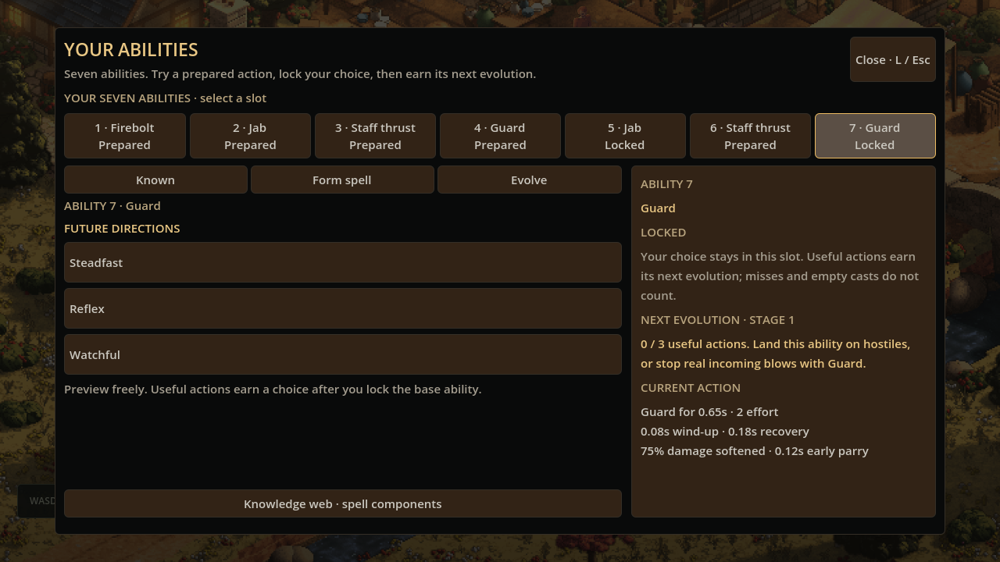
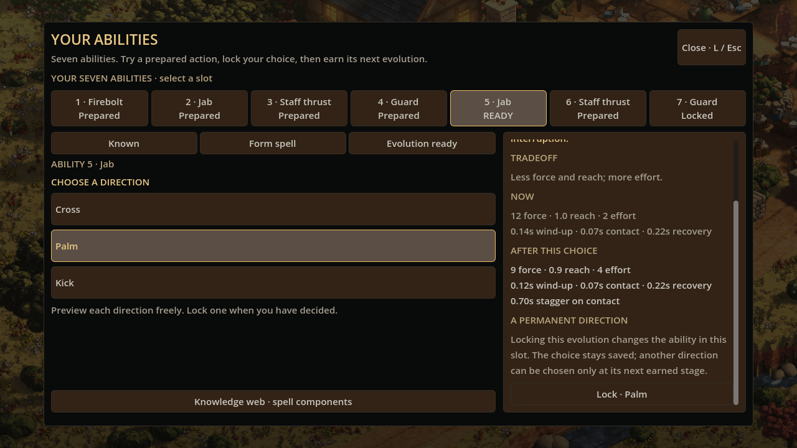
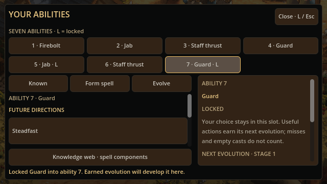

Seven abilities, choices that stay
Seven active abilities give a character more room to grow. Try an ability, commit it to a place, then earn choices that develop it there. Each evolution becomes part of that character's history.
23 October 2026

An adventurer's abilities should tell a story about the person using them. A familiar strike can become a different technique. A trusted spell can become heavier, quicker or longer reaching. Those decisions should stay with the character.
This update expands the action bar to seven abilities and gives each committed ability its own development. Fists, the staff and traditional magic share those places, which you can fill as you learn. Press 1–7, or tap a button, to use the whole action you have prepared.
Try it, then make it yours
The ability book distinguishes Prepared from Locked. A prepared ability is available to try. You can practise its timing, see whether its reach suits you and change your mind before making a lasting choice.
When you are ready, open the book in a quiet moment and lock the ability into its place. The book makes that commitment clear before you confirm it. Future earned choices develop the ability in that same place.
Existing characters keep their assigned abilities as prepared choices when their book expands to seven places. The update leaves those commitments for the player to make.
Practice belongs to the ability you use
A committed ability grows through a useful result. A physical attack or spell must actually reach a hostile. Guard must catch a real incoming blow. An action that contacts several foes still counts once for that ability's development.
A miss spends the effort you committed to the action, but earns no development. Pressing Guard in an empty clearing does not advance it either.
The first evolution opens after three successful uses of that committed ability. After choosing, the next stage asks for six further successes. A third stage asks for nine more. Progress belongs to each ability separately, so a well-practised staff thrust and a newly committed spell can be at different points in their development.

A choice changes what you do
A jab's first development offers Cross, Palm or Kick. Cross commits to a heavier punch. Palm gives up force and reach for a shorter technique with greater interruption. Kick reaches farther and strikes harder, with more effort and a slower recovery.
The chosen technique replaces the jab's action in its existing place. The next time you press that number, you use the developed technique.
Other abilities, and later stages, offer different ways to refine the action. Heavy adds force with more effort and recovery. Swift shortens preparation and recovery while giving up force. Extended increases reach or spell travel, with a smaller blow and greater effort.
Guard has its own versions of those choices. Steadfast softens a caught blow further and lengthens its parry window. Reflex prepares and recovers faster, with a shorter guarding window. Watchful covers a wider arc while asking more effort and absorbing a little less of the impact.
The book shows the current action beside the proposed result. You can inspect the alternatives before confirming. Once chosen, that stage stays in the ability's saved history; the next earned stage adds another decision.
Seven actions on a smaller screen

The town's compact action bar uses two rows so the extra abilities have usable buttons. The book keeps the offered paths together and puts the selected path's details beside them. Casting and striking remain single actions in the field; choosing a direction happens between fights.
There are three evolution stages in this first version. It gives each of the seven abilities a history to build, from the first technique you trust to the later choices that make it feel like yours.